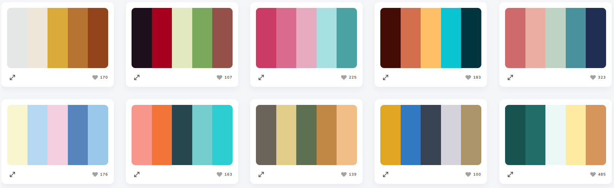

Sur ce site, j'expose mes connaissances et mon parcours en tant que développeur web.
Vous pouvez retrouver mes projets mais aussi l'apprentissage des langages de programmation orientés
web expliqués à ma façon. Ce site a vocation a evoluer en terme de technologie mais aussi de design
au fur et à mesure de mon apprentissage. Le but étant de coder le site de la façon la plus
professionnelle qui soit.
Pour chacunes des pages du site, j'exposerais comment celle-ci a été codé, en décrivant chaques
langages utilisés pour obtenir ce résultat. Différentes techniques de programmation seront utilisés
en fonction du sujet abordé sur la page que vous consulté. (par exemple, une page expliquant
l'utilisation de bootstrap sera codé et stylisé avec ce Framework.)
Le header est composé d'une div de classe .logo dans lequel on
insère une img qui servira a afficher le logo du site.
On crée ensuite une nav qui contient une liste ul pour afficher le
menu. On insère un deuxieme ul dans le premier li 'Langages ▼' pour
créer le menu déroulant. On place ensuite un lien a dans chaques li et on
configure le tout en CSS.
Un dernier a pour le bouton de connexion est créé en dehors de la liste
ul pour pouvoir le positionner a l'écart des autres boutons via CSS.
Pour le main, on commence par l'image de fond via une div
de classe .index dans lequel on insère une img
préalablement modifié depuis Adobe XD. Cette image est statique, elle ne change pas.
On pourrait dynamiser cette partie du site gràce a Bootstrap ou bien JS en
créant par exemple un carroussel d'image qui défilerait de manière autonome.
Le composant suivant est une section qui regroupe un article et
une div de classe .navigation contenant une liste
ul. Les balises section et article ont une valeur
sémantique ici. La balise div quand à elle sera utiles avec CSS pour la mise en
page des liens en CSS.
Un composant contenant une div de classe
.detail pour la mise en page CSS, avec
à l'intérieur un article qui comprend lui même un titre h2 et un
paragraphe.
Cette dernière div de classe .code est un
peu particulière. Elle contient une div de classe .technologie qui possède
3 balises button qui seront utilisées dans un script Javascript pour les
div présentes a la suite de .technologie.
Les balises div d'id #html, #css
et #js, et ayant toutes la classe .planPage seront
affiché et visible sur le site uniquement lors du clic sur les boutons correspondants dans
.technologie.
Le style CSS
La charte graphique du site

Pour commencer, il a fallu choisir la charte graphique du site, la police de caractères,
les couleurs, les tailles de textes ...
Pour cela, je me suis servi du site
palettedecouleur.net
qui propose un large choix de palettes de couleurs différentes pour optimiser la clarté d'un site.
Je n'est pas choisi de police de caractères spéciale, j'ai utilisé Helvetica, une des
polices par défaut.
Pour les couleurs, j'ai choisie un assortiment de bleu et de noir pour les couleurs
principales, ainsi que du beige et du jaune pour créer un contraste qui soit agréable à
l'oeil de l'utilisateur.
Les tailles de caractères sont exprimées en rem, cela facilite l'intégration
de media queries dans la page et rend le site plus facilement responsive.
La mise en page CSS
1
2
3
Toute la mise en page du site est faite avec flexbox, le module de boîtes flexibles de
CSS. Grâce a des div, on crée des blocs de contenu que l'on positionne ensuite
en ligne ou en colonne. (Passer la souris sur l'image a droite pour voir la différence entre
un flexbox en ligne ou en colonne)
Une largeur de 1200px est appliqué sur tout les composants html du
site. Ils sont ensuite positionné au centre de la page avec un margin: auto.
Lorsque l'on passe sur un écran plus petit, comme une tablette, la largeur passe à 800px
et les élements à l'intérieur s'ajustent automatiquement pour garder un design responsive. Ensuite,
quand on passe sur un écran de smartphone, la largeur change encore pour passer à 428px.